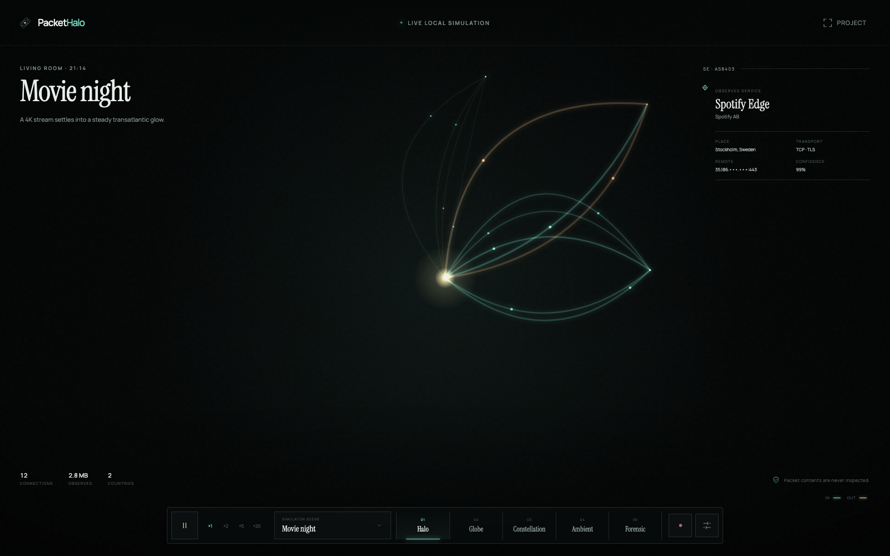
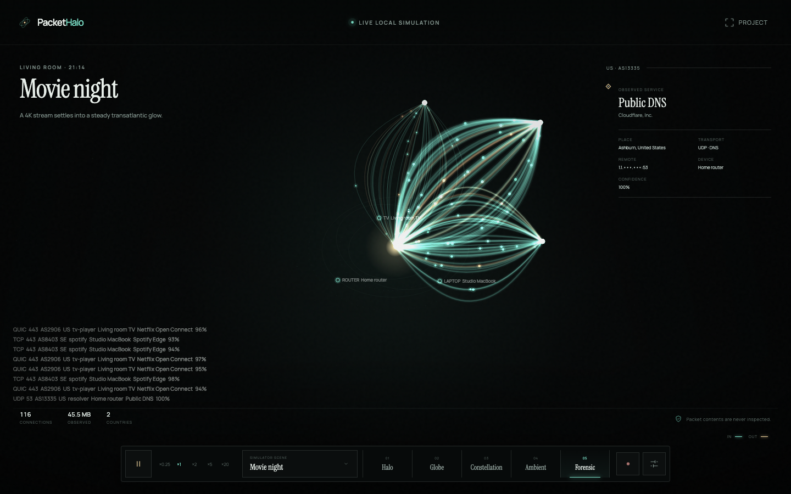
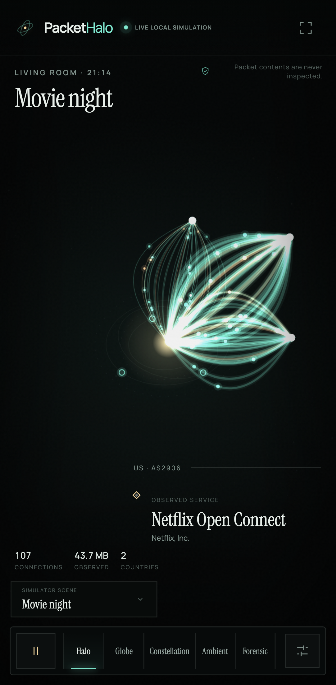
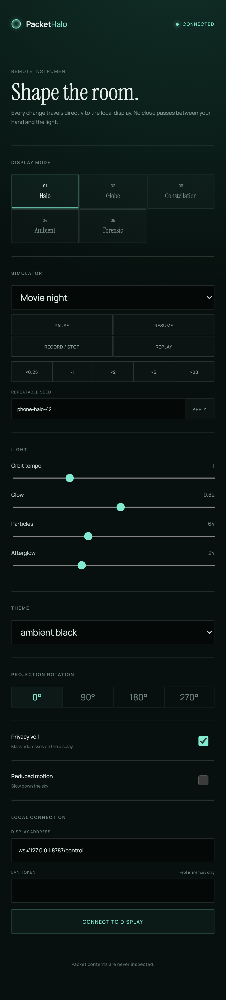
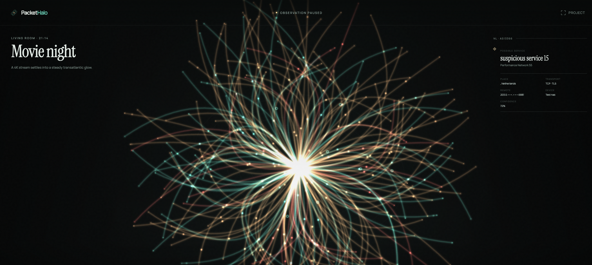

Halo
The signature living sculpture.
Local-first network observatory
PacketHalo turns connection metadata into a living field of light—so you can see where your home is communicating without reading what anyone sends.
Movie Night · deterministic browser-only preview
An instrument, not a dashboard
Home sits at the center. Devices move in quiet orbit. Connections bloom into curved light, remote networks pulse at the edge, and the recent past fades instead of disappearing. Leave it on a wall. Pause when something feels different. Move from atmosphere to evidence without leaving the same visual language.
The main observatory
Start with a deterministic scene in seconds. Switch visual modes, filter the field, pause time, record a session, replay it, and hand control to a phone.

The signature living sculpture.
Geography, weight and arc altitude.
Services become clustered stars.
Projector-safe and almost silent.
Ports, ASNs, protocols and confidence.
Room to hand
The observatory is built for a laptop or wall. Its phone layout preserves the essential field. A separate local controller lets the room stay uninterrupted.



A structural promise
Privacy is enforced at the protocol boundary. Undeclared fields and content-like keys are rejected before SQLite ever sees them.
Read the privacy model ↗142.250.18.34 · QUIC/443 · AS15169 · 842 KB · 92%
GET /private-page · Cookie · message text · response body
Clear boundaries
The simulator and real providers meet at one payload-incapable contract. The server persists metadata locally and broadcasts it to displays. Presentation never changes what capture is allowed to observe.
*Measured in foreground Chrome on an Apple M2 at 1920×1080. Full method and CPU accounting are published in the performance notes.
No credentials required
Movie Night begins automatically. The complete visual system works before any real capture provider is enabled.
$ git clone https://github.com/OthmaneBlial/PacketHalo.git
$ cd PacketHalo
$ pnpm install
$ pnpm dev
Measured, not imagined
Renderer limits, adaptive sampling, monotonic time and bounded retention keep the field smooth without hiding the measurement method.

The room has a pulse